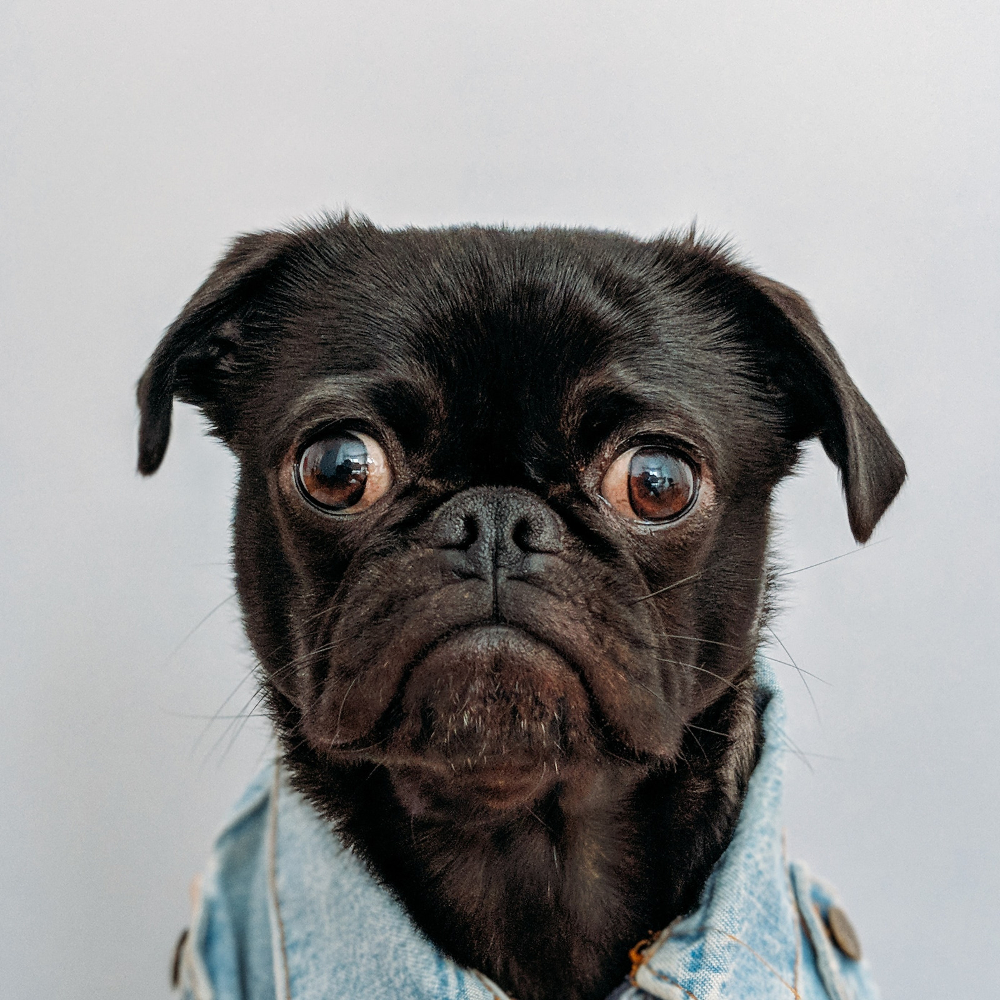

About me
Studentin Angelina Lifatov wurde in der Stadt
Belowodskoje in Kirgistan am 26. März 1999 geboren. Mit 3 Jahren ist sie nach
Deutschland gekommen. Ihre Kindheit und Jugend verbrachte Sie in Kaarst. In Ihrer Freizeit zeichnet Sie sehr
gerne.
Deswegen war Ihr schon früh klar, dass Sie etwas im
kreativen Bereich machen möchte. 2014 absolvierte Sie ihr Praktikum bei Peter Dück
Grafikdesign. Durch das Praktikum gelang es Ihr einen Einblick zu machen und für sich zu realisieren, was
Sie wirklich machen möchte. Im Jahre 2015 bekam Sie ihren Realschulabschluss und daraufhin im Juni 2018 ihr
Abitur. März 2018 bestand sie die Eignungsprüfung. Nachdem wurde sie im August an der Hochschule Düsseldorf
immatrikuliert.